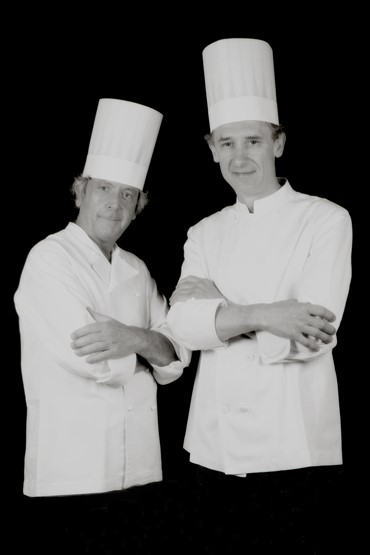
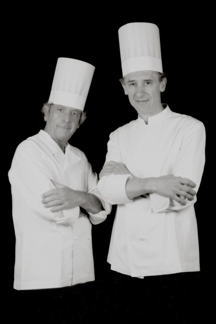

I nostri chef
"Cucinare per una persona vuol dire incaricarsi della felicita' di questa persona durante le ore che egli passa sotto il vostro tetto."
- Anthelme Brillat-Savarin, Fisiologia del gusto, 1825
Questo aforisma racchiude ed esprime esattamente la sensazione che regala l’essere ospiti dello Chef del Ciacolon, Federico Gramaglia. La cura e la passione messe in ogni preparazione, unite alla lunga esperienza in cucina ed a un talento indiscutibile, conferiscono ai piatti del Ciacolon (siano essi minestre, antipasti o dolci) una caratteristica armonia sempre in sapiente equilibrio tra sapore e delicatezza, tradizione e innovazione.
La percezione è quella di gustare piatti semplici, propri di una lunga tradizione tutta italiana, ma sempre declinati secondo le tendenze del momento e curati nel minimo dettaglio.
La cosa più rassicurante, infine, è il piacere di ritrovare, anno dopo anno, quegli stessi profumi e sapori “di casa” che fanno la differenza tra un semplice ristorante in cui si va solo per mangiare e il Ciacolon: una vera e propria “Ca’ Veneta”, un luogo dove ritrovarsi, gustare e condividere “momenti”.
Agli chef storici Pierluigi Florio e Federico Gramaglia, ormai in pensione, si è affiancato prima e sostituito poi, lo chef Andrei Cosovanu che ha voluto prendere dai suoi predecessori il testimone della cucina del Ciacolon, riallacciando saldamente il legami e rinnovando il sodalizio fortunato con il territorio e le eccellenze delle Tre Venezie, traghettando così il “quarantenne” Ciacolon nel nuovo millennio, con freschezza, novità e rinnovata fantasia, senza dimenticarne però la storia e le tradizioni.
Andrei Cosovanu: classe 1986, dopo gli studi nel suo paese di origine, viene in Italia nel 2002 desideroso di apprendere nuove tecniche e di accrescere il suo bagaglio di conoscenze. Inizia presto il percorso professionale nel nostro paese, lavorando a Roma, in Basilicata, a Venezia e successivamente a Torino dove incontra ed inizia una collaborazione che durerà 7 anni, con lo Chef Antonio Chiodi Latini prima e con lo Chef Antonio Manarello poi. E’ grazie a questa collaborazione che migliora le sue basi professionali, crescendo sia a livello tecnico che umano.
 
